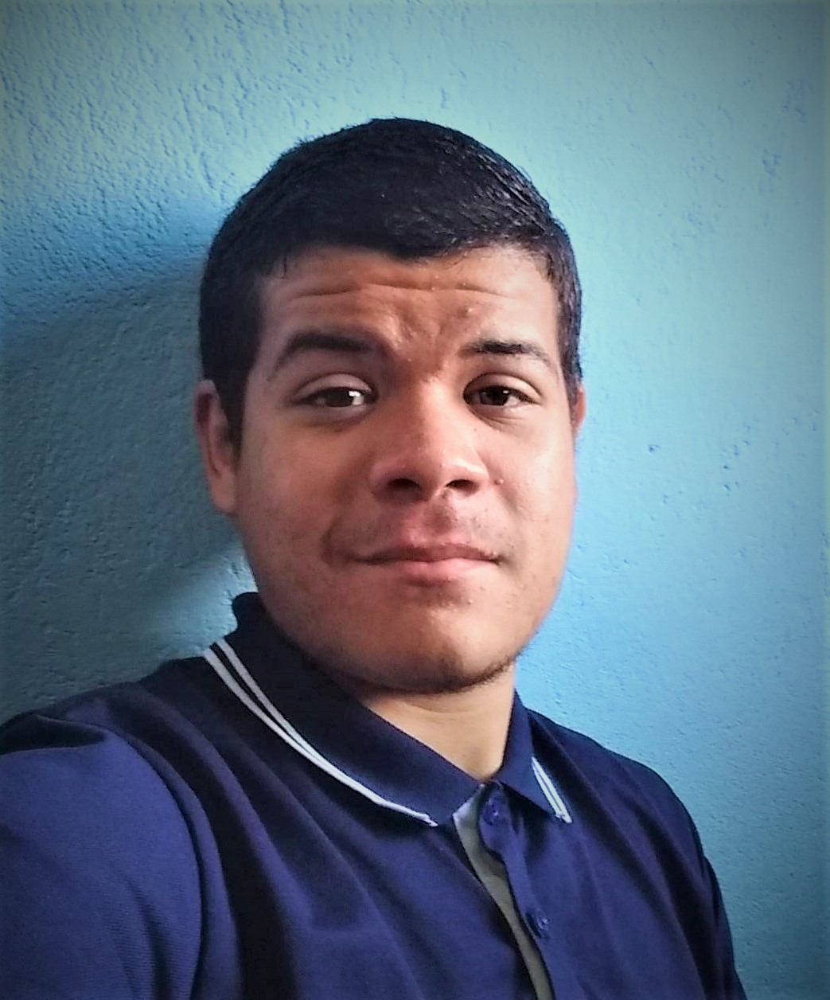

Olá, me chamo Julio Cesar tenho 20 anos, sou apaixonado pela tecnologia desde de que me conheço por gente, sempre curti muito a parte de hardware de montagem de computadores, sempre gostei de fuçar no computador, entender como as coisas funcionam, mas exatamente em 2019 quando me matriculei na faculdade de Sistemas de Informação, já não perdi tempo e fui ver o que era programação, porque sempre escutei que era algo muito difícil, então eu de maneira superinteligente já fui logo metendo as caras para me adiantar e foi bem ali quando comecei a aprender os primeiros comandos vendo o que eu conseguiria fazer apenas com lógica e código, a felicidade após resolver um problema, foi bem ali que tomei tanto gosto por essa maravilhosa área, atualmente estou no meu 3° semestre de Sistema de Informação e estudando muito por fora porque sempre procuro ser o melhor no que faço por isso sou bem dedicado nos meus estudos. Busco sempre estudar tecnologias novas, fazer projetos pessoais, estar sempre colocando meu conhecimento na prática, me desafiando cada vez mais e com tudo isso melhorando dia após dia.

Julio Cesar